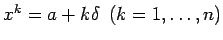

- 1. Aufgabenstellung:
- Es sei f auf [a,b] unimodal und x* ein globaler Minimalpunkt. Dann soll ein Intervall mit und , bestimmt werden. Dabei heißt , eine unimodale Funktion im Intervall
 , falls f auf jedem abgeschlossenen Teilintervall genau einen lokalen Minimalpunkt besitzt.
, falls f auf jedem abgeschlossenen Teilintervall genau einen lokalen Minimalpunkt besitzt.
- 2. Gleichmäßige Suche:
- Man wählt n (n ganzzahlig) so, daß gilt, und berechnet die Werte f(xk) für . Ist f(x) unter diesen Funktionswerten ein kleinster Wert, dann liegt der Minimalpunkt x* im Intervall . Die für die geforderte Genauigkeit notwendige Anzahl von Funktionswertberechnungen kann mittels
abgeschätzt werden.